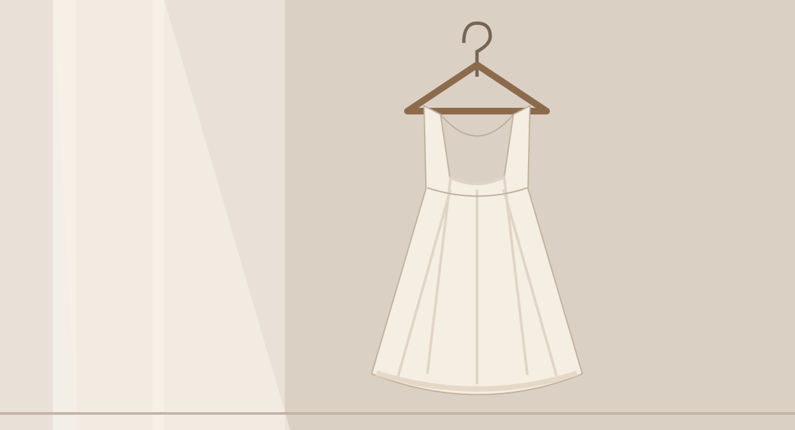
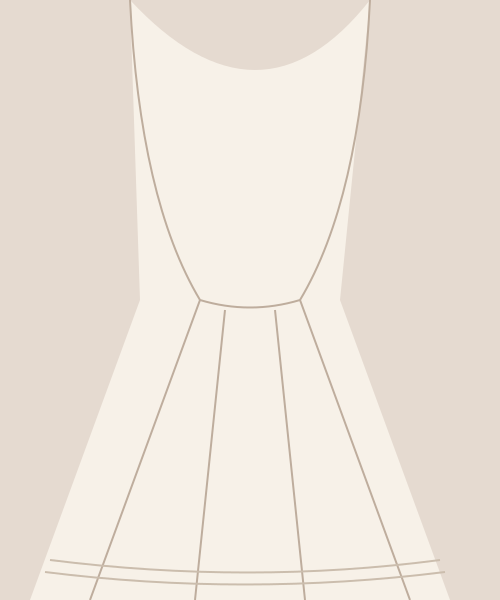
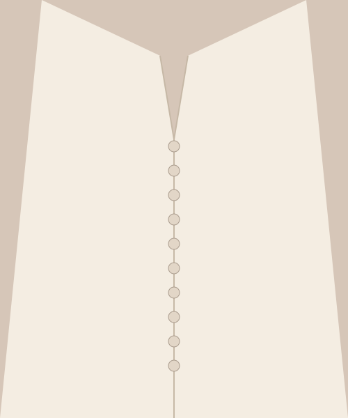

Charlotte Simpson.
British, clean lines, almost no beading.

A quiet shop on a Georgian street with two fitting rooms,
no commission, and a seamstress upstairs.
We stock eleven houses and nothing else, because eleven is the number our two fitting rooms can do properly in two hours. Every dress is altered here by Teresa, who has been doing it for thirty one years and has never once suggested you lose weight for the fitting.
Every gown is cut to the designer's size chart, not yours.
That is what the three fittings are for.
Five of our eleven houses.
A starting point, not a checklist.
Your shortlist is empty.
Talk us through your favourites ↗British, clean lines, almost no beading.
Separates and two piece looks for a register office.
Soft, layered, good for a barn or a garden.
Structured bodices, deep pockets, sensible straps.
French, sharper, for a bride who does not want a princess dress.
You, two people at most, and a glass of something. We pull five or six and you try them on. No pressure to buy on the day and no discount for doing so.
If you want to sleep on it, sleep on it. We hold nothing back and we will not ring you.
First at twelve weeks, second at six, last at two. Bring the shoes and the underwear you will actually wear.
Pressed, bagged, and shown to you on the hanger before it leaves.
Hem and bustle 180 GBP
Bodice taken in or let out 140 GBP
Straps or sleeves added FROM 210 GBP
Full restructure QUOTED AT FITTING
Allow twelve weeks, or tell us if you have less.


“I had been to two shops where they clipped me into things three sizes too small. Here they rang ahead and told me exactly what they had in a 20.”
Illustrative testimonial from the fictional boutique brief.